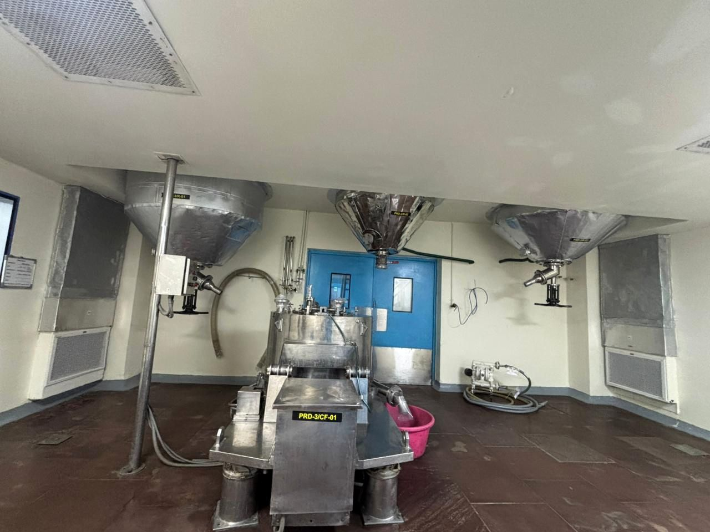

Gluconates, citrates, glycinates and 132 more products in BP, IP, USP, NF, FCC and ACS grades, for pharmaceutical, nutraceutical and food brands in over 40 countries.
We began in 1982 making mineral gluconates. Four decades later we manufacture minerals and speciality chemicals for food, beverage, cosmetic and pharmaceutical companies worldwide.
1982
Founded in VadodaraStarted as a mineral gluconate manufacturer at GIDC Makarpura.
2016
Plant II goes live at MujpurBuilt to FSSAI, FSSC 22000, cGMP and ICH Q7A guidelines.
Today
135 products, 40+ countriesWith an office in Mumbai and a distributor in the USA.
Six of the twelve stages in our general process flow, photographed on the shop floor. Material moves one way through the plant, with separate entries for people and materials.
Stage 01 of 12
Raw material
Tested raw material and process water enter the reaction.

Stage 02 of 12
Reaction
Raw materials react to form the mineral salt in solution.
Every procedure meets FSSC 22000 and cGMP standards, and products are made under a HACCP programme. National and international health agencies inspect the plant.